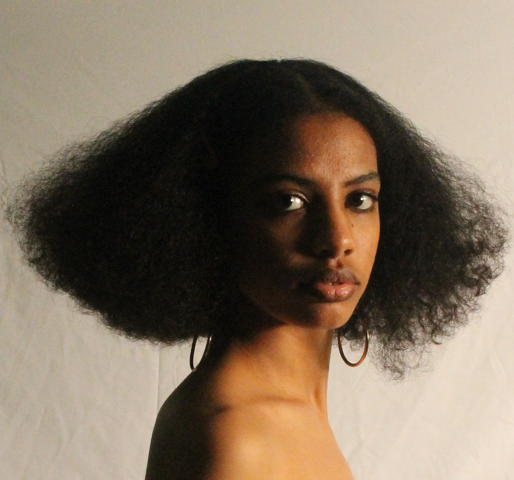

About Me
I’m Beimnet Zerefa, a merit scholar student at Parsons majoring in Integrated Design and exploring cultural art practices. I have overseen and co-curated a multimedia exhibition at Shelter Gallery and am currently working on building a web archive for Ethiopian art and design. I am looking to start an internship and work as a creative at the intersection of design and tech upon graduation.
Creative Practice
My primary interests revolve around cultural practices, regenerative design, archival work, and creating art that is meaningful through its process. In my creative practice thus far, I engage with a diverse array of craft-based multimedia. This includes, but is not limited to, textiles, photography, painting, and graphic design. The formal qualities of my work are characterized by vibrant colors and busy compositions, often featuring rich cultural motifs. Each piece is made with the intention to bridge traditional aesthetics with contemporary practices, creating work that is both visually stimulating and culturally informed.
Aesthetic Values
My aesthetic values are deeply rooted in the significance of cultural expression and multimedia design. My projects are intentionally designed to be non-abstract, focusing on tangible connections to cultural heritage and personal identity. The process through which I create my work is non-linear and exploratory. I rely heavily on in-depth research and regenerative methods, which guide my artistic practice. Instead of traditional sketching, I engage in brainstorming sessions accompanied by music, which makes for a more creative workflow. Collaboration and conversations with like-minded peers also play an important role in shaping my practice, allowing me to draw inspiration and insight from external sources.
Artistic Process
My creative endeavors are driven by the need to articulate complex concepts that are often difficult to convey through words alone. I believe that art serves as a medium to both preserve and innovate cultural heritage. By expanding Ethiopian artistic practices in my own methods, I hope to contribute to a broader understanding of cultural narratives and their relevance in contemporary contexts. My research interests also have a significant influence on my artistic practice. I engage in a "rabbit hole" style of researching, immersing myself in a multitude of interconnected subjects. This approach not only fuels my curiosity but also informs and enriches my creative process, leading to unexpected and innovative outcomes.
Future Goals
Looking ahead, I am focused on honing my digital and technical skills, with a particular interest in learning coding to develop an archival website dedicated to Ethiopian art and design. This project aims to create a unique platform for showcasing and preserving Ethiopian artistic practices. Additionally, I plan to start an internship in a creative or tech design field to enhance my professional growth.
Through these endeavors, I aspire to continue evolving as an artist and designer, bridging the gap between traditional craftsmanship and technical skill. Ultimately, I hope to contribute to expanding the art world in Ethiopia so that other young Ethiopian artists may have the space and resources to grow their practices.